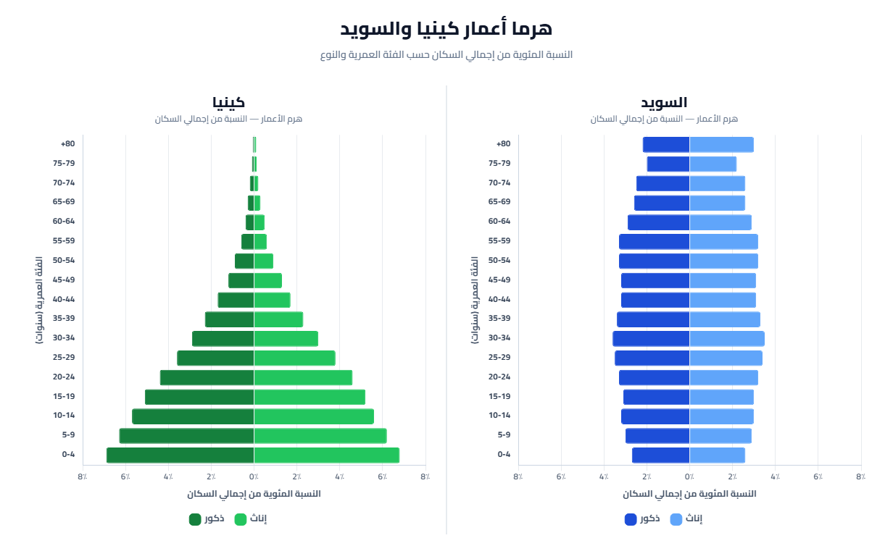
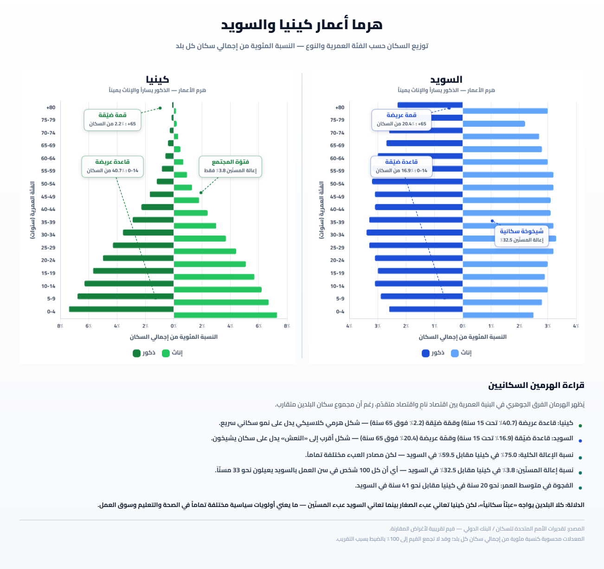

تمارين – الحركية الديمغرافية للسكان
- الانفجار الديمغرافي:
- ارتفاع سريع في عدد السكان ناتج عن ارتفاع نسبة الولادات وتراجع نسبة الوفيات، مما يجعل النمو الطبيعي مرتفعاً (يفوق 2%). تعيشه معظم الدول النامية ومنها كينيا التي بلغ عدد سكانها 54.7 مليون ساكن سنة 2020.
- الفتور السكاني:
- نمو سكاني بطيء ناتج عن تراجع نسبة الولادات وانخفاض نسبة الوفيات، مما يجعل النمو الطبيعي ضعيفاً (0.2%). تعيشه الدول المتقدمة ومنها السويد التي بلغ عدد سكانها 10.4 مليون ساكن سنة 2020.
- النمو الطبيعي:
- الفرق بين نسبة الولادات ونسبة الوفيات في بلد ما خلال سنة، ويُعبّر عنه بالنسبة المائوية، ويكون مرتفعاً في الدول النامية (2.2% في كينيا سنة 2020) وضعيفاً في الدول المتقدمة (0.2% في السويد سنة 2020).
- الانتقال الديمغرافي:
- نظرية ظهرت منذ 1934 في دراسة للعالم الفرنسي أدولف لندري، تُفسّر الانتقال من نظام ديمغرافي تقليدي (ولادات ووفيات مرتفعة) إلى نظام عصري (ولادات ووفيات منخفضة)، وتمرّ بثلاث مراحل: النظام التقليدي، مرحلة الانتقال (طور الانفجار وطور الانتقال)، والنظام العصري (النضج الديمغرافي).
| البلد | نسبة الولادات (‰) | نسبة الوفيات (‰) | النمو الطبيعي (%) |
|---|---|---|---|
| كينيا | 27 | 5 | 2.2 |
| السويد | 11 | 9 | 0.2 |
المصدر: معطيات الدرس حول الحركية الديمغرافية للسكان


يتميّز هرم أعمار كينيا بقاعدة عريضة بسبب ارتفاع نسبة الأطفال دون 15 سنة (38% سنة 2020) وقمة حادة بسبب انخفاض نسبة الشيوخ (3% فقط)، مما يدل على تركيبة عمرية فتية وانفجار ديمغرافي، ويترتب عن ذلك الرفع من نسبة الاستثمارات الديمغرافية والاجتماعية في الصحة والتعليم على حساب استثمارات التنمية. أما هرم أعمار السويد فيتميّز بتقلّص القاعدة بسبب انخفاض نسبة الأطفال إلى أقل من 18% سنة 2020، وانتفاخ الوسط، وتسطّح القمة بسبب ارتفاع نسبة الشيوخ إلى حوالي 1/5 السكان، مما يدل على تركيبة عمرية متهرّمة ونضج ديمغرافي، ويترتب عن ذلك ارتفاع العمر المتوقع عند الميلاد إلى 82 سنة سنة 2020 وارتفاع كلفة الرعاية الصحية والاجتماعية للمسنين.
- مقدمة: تحديد مفهوم الحركية الديمغرافية واختلافها بين الأقطار.
- تطوير: أولاً. حالة كينيا (الانفجار الديمغرافي)؛ ثانياً. حالة السويد (النضج الديمغرافي)؛ ثالثاً. العوامل المفسرة للاختلاف.
- خاتمة: الحركية الديمغرافية خاصية متغيّرة حسب مراحل الانتقال الديمغرافي.
مقدمة
تهتمّ الحركية الديمغرافية بنمو السكان والعوامل المرتبطة به، وهي تختلف من قطر إلى آخر حسب مرحلة الانتقال الديمغرافي التي يمرّ بها. ويظهر هذا الاختلاف بوضوح في حالة كينيا (العالم النامي) والسويد (العالم المتقدم).
تطوير
أولاً. حالة كينيا: الانفجار الديمغرافي
تعيش كينيا انفجاراً ديمغرافياً واضحاً، إذ تضاعف عدد سكانها أكثر من 9 مرات خلال 70 سنة ليبلغ 54.7 مليون ساكن سنة 2020، وترتفع نسبة النمو الطبيعي إلى 2.2%. ويُفسَّر ذلك بارتفاع نسبة الولادات (27‰) وارتفاع معدل الخصوبة (3.4 طفل/امرأة) وتراجع نسبة الوفيات، إضافة إلى عوامل اجتماعية وثقافية كتعدّد الزواج والزواج المبكر وارتفاع نسبة الأمية. وقد ترتب عن ذلك تركيبة عمرية فتية (38% دون 15 سنة و3% شيوخ) وارتفاع الاستثمارات الديمغرافية والاجتماعية على حساب استثمارات التنمية.
ثانياً. حالة السويد: النضج الديمغرافي
تشهد السويد فتوراً سكانياً، إذ لم يتزايد عدد سكانها خلال 70 سنة إلا بـ 3.4 مليون ساكن ليبلغ 10.4 مليون ساكن سنة 2020، وانخفضت نسبة النمو الطبيعي إلى 0.2%. ويُفسَّر ذلك بتراجع نسبة الولادات إلى 11‰ وانخفاض مؤشر الخصوبة إلى 1.7 طفل/امرأة وانخفاض نسبة الوفيات إلى 9‰. وقد ترتب عن ذلك تركيبة عمرية متهرّمة (1/5 شيوخ وأقل من 18% أطفال) وارتفاع العمر المتوقع عند الميلاد إلى 82 سنة. وقد انتهجت السويد سياسة سكانية تشجّع على الإنجاب بتوفير منح العطل طويلة الأمد (450 يوم منها 360 يوم خالصة الأجر) ومنح على الأبناء.
ثالثاً. العوامل المفسرة للاختلاف
يُفسَّر اختلاف الحركية الديمغرافية بين كينيا والسويد باختلاف مرحلة الانتقال الديمغرافي: فكينيا تقع في طور الانفجار (مرحلة الانتقال الديمغرافي)، بينما تقع السويد في النظام العصري (النضج الديمغرافي). كما يلعب مستوى التنمية الاقتصادية والاجتماعية والثقافية دوراً أساسياً في هذا الاختلاف.
خاتمة
هكذا تختلف الحركية الديمغرافية بين العالم النامي والعالم المتقدم باختلاف مراحل الانتقال الديمغرافي واختلاف مستوى التنمية، وهو ما يبرز من خلال المقارنة بين كينيا والسويد.